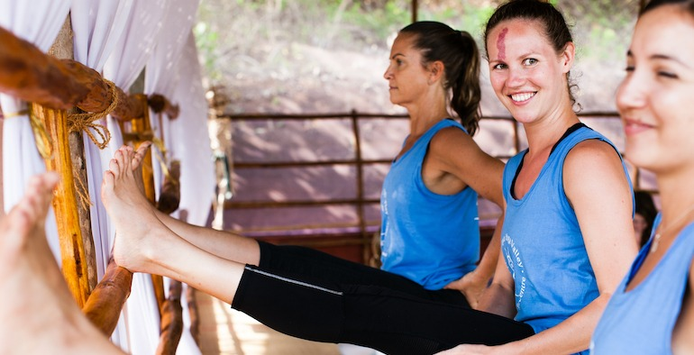
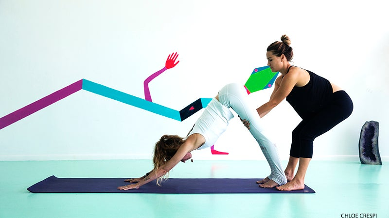
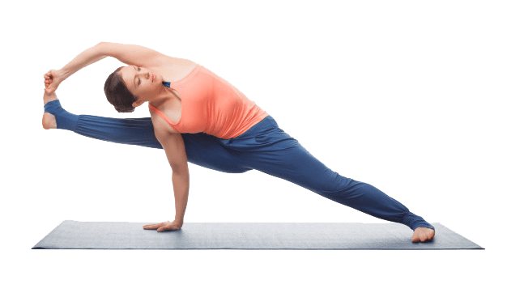
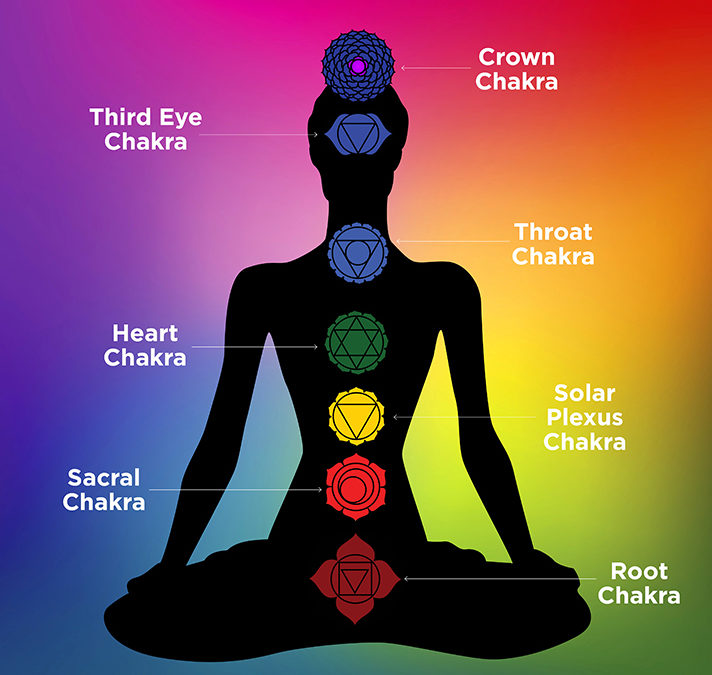
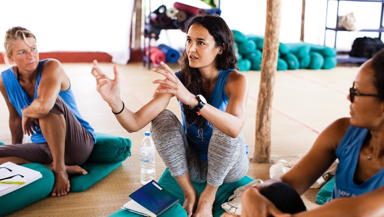
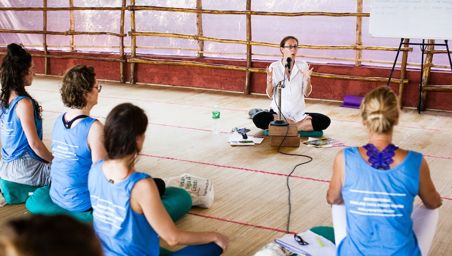

RYS 300 Hour Yoga Teacher Training
300 Hour Yoga Teacher Training Course
Himalaya Yoga Valleys 300 hour program is regarded within the yoga field to be one of the most innovative and transformational advanced training courses for trainees looking to take their personal practice, teaching skills, and specialist
knowledge to the next level.
Our 300 Hour Level 2 Training Course is a continuation of the Level 1 200 Hour syllabuses at an advanced level, for an additional 300 hours study and skills training. The Level 2 Course is unique to Himalaya Yoga Valley in its concept,
wherein trainee teachers have the opportunity to undertake an optional Elective Unit which enables them to develop a body of knowledge and portfolio around a specialised area of yoga they are interested in pursuing within a supportive and
expert environment. Portfolio development is done in a supportive environment with the assistance of experienced teaching staff across all modalities.
Trainees delve into their chosen area and build up a body of knowledge, becoming fully informed and practically taking the knowledge into the business development realm and right down to the yoga mat when delivering the final practicums related
to the area of specialisation. Examples of previous trainee areas of specialisation are Yoga for Anxiety and Panic Attacks, Yoga for Children with Autism, Yoga for PTSD, Yoga and Ayurveda for Psychosomatic Disorders and many more areas
trainees are passionate about.
Now that you have that strong Level 1, 200 HR foundation as a yoga teacher, in the advanced training you will build on that foundation in a more creative and less linear way. The additional 300 hour training that makes up your Level II
Yoga Teacher Training qualification is structured with integrity to ensure you are not rushed or time burdened yet still constantly stimulated by challenging creative and relevant learning outcomes. A strong emphasis will be placed on deepening
your personal practice during the training under Yogacharya Lalit's guidance.
Outline of our 300 Hour Yoga Teacher Training Syllabus
Asana
There is a two-tiered approach to asana in this Level 2 training. The first level is geared towards trainees deepening their personal practice and progressing towards a peak relative to their individual constitutions, physical abilities
and personal goals. The second tier is dedicated to learning to teach a series of asana derived from the Ashtanga Primary Series.

Trainees are encouraged to balance challenging themselves through the Primary Series with a deep respect for their bodies and individual needs. Teachers will explore their personal practice experiences in relation to teaching practicges - any personal asana limitations will be approached as an opportunity to explore alternative postures, props and modifications and these limitations will be utilized as teaching opportunities and areas of growth.
Trainees are guided in led classes through the Ashtanga Primary series by Yogacharya Lalit as per his Lineage, with an emphasis on individual progress relative to the trainees own starting point. There is a strong focus on correct alignment and progression through receiving physical and verbal adjustments. By using a variety of traditional Mysore style of learning and daily led practices, trainees will become familiar with the entire Ashtanga Primary series, increasing their knowledge of each individual posture.

The daily asana practice will be varied, all classes will include cautions, contraindications, modifications, and alignment, using props and anatomical information to further Trainees personal and teaching practice. Trainees will learn from the
different families of asana: Arm balancing, backbending, hip opening, twists, inversions. Deepening of physical practice will be facilitated under the guidance of Yogacharya Lalit and his teaching team during led classes with
the final week having an emphasis on Mysore style practice to encourage self-determination and personal responsibility and commitment towards future self-practice.
Personal Practice
Yogacharya Lalit will guide you in deepening your personal practice using a variety of sequences and asana variations including a series inspired by the Ashtanga Primary Series and other daily classes that will be dedicated to specific
themes such as hip opening, back bending, arm balancing and inversion sequences. Deepening and developing your personal practice will be a priority on this training. This will be relative to your existing practice and will, therefore, be non-competitive
yet definitely challenging and rewarding in relation to where you are in your practice. The objective is for trainees is to significantly deepen their personal practice and improve their alignment, asana knowledge in understanding the
use of posture variations, props, and in turn, apply their personal experience of growth to their teaching practicums.
Please note that all levels of practitioners with a strong sense of discipline are heartily encouraged to take this journey with Yogacharya Lalit and his team to deepen their practice. Your progress, practice and development is relevant
to you as an individual, not your neighbour which is the reference point we work from and encourage our trainees to embrace.
This objective will be facilitated under the guidance of Yogacharya Lalit during led classes. The final week of the course will have an emphasis on reinforcing learning outcomes, personal asana progress and development through Mysore style self-practice
classes to encourage self-determination and personal responsibility and commitment towards future self-practice.
Teaching Series
Under the guidance of Yogacharya Lalit, trainees will teach a series of asana inspired by and derived from the Ashtanga Primary Series. The objective is to deconstruct, analyse and understand each asana on an anatomical, pranic, physical,
therapeutic and psycho-emotional level. Trainees are encouraged to use their personal practice experience as a tool to develop and understand the importance of offering posture variations in order to grow teaching skills and bring this understanding
to teaching future classes. Using the teaching series of 52 postures as a learning platform, on a daily basis trainee will practice to teach all elements of the advanced asana in preparation for course teaching practicums. Through
the teaching series, trainees increase awareness of adjusting postures they teach to suit the individual needs of their future students. Furthermore, trainees will gain an understanding of how to modify certain postures within a variety of asana series inspired by and derived from the Ashtanga Primary Series, as well as learn building blocks on how to assist students in being able to systematically improve various postures through the use of modifications and props.
Asana Alignment Techniques
A necessary requirement for any yoga teacher to be a safe, confident and credible teacher is to be able to visually assess their students’ alignment during classes and be able to offer them physical and verbal adjusting cues to rectify common
misalignments, prevent injury and increase therapeutic, energetic and physical benefits of the postures. During the 300 Hour yoga teacher training, through a hands-on approach, trainees will continue to develop their understanding and their
teaching skills around common misalignments, correct alignment and the application of physical and verbal cues to guide their future students. In line with traditional yoga, trainees will learn to apply the use of modifications in asana
and use of props in order to assist their students to access depth and correct alignment in their yoga postures. Trainees will learn that alignment is not merely mechanical, but that it is about ensuring quality integration within the body,
leading their students to a state of steadiness & ease (sthira and sukha) and a process of refinement creating a stabilising structure.
Asana Adjustment Techniques
Understanding the principles of alignment and adjusting is base foundational knowledge learned on 200 hour training, During the 300 Hour Yoga Teacher Training, trainees will further improve their adjusting skills under the guidance of Yogacharya Lalit, using traditional Mysore adjustment techniques to assist trainees in guiding their future students towards deeper expressions of the postures. A strong emphasis is placed on correct alignment as a pre-cursor for enhancements through adjusting.
This grows their existing core skills in adjusting and brings trainees to a higher level in physical adjustment techniques for advanced asana based on anatomical and energetic rationale for the 300 hour teaching series.
Class Sequencing Techniques
These lectures are structured to expand your knowledge of how to construct asana classes in a safe and meaningful manner to meet the needs of students. One part of this unit will guide trainees to understand sequencing classes around optimising
the health of their students through structuring asana classes around Yoga for the systems. The second part within the sequencing unit will be focused on developing appropriate class sequences for specialised groups of students, with an emphasis
on Yoga as Therapy. This second part has been developed to guide teachers through class construction skills required to assess the needs, fears and appeals of their target group/students, in order to learn how to cater or develop specialised
sequencing from a holisitc, inclusive and therapeutic perspective.
Chakras And Mantras
This Unit is a continuation of the 200 Hour lectures on the Chakras and Nadis at a deeper level. Understanding the functions of the chakras is an integral part of a yoga teachers’ knowledge. This Unit is compiled to simply yet effectively allow
trainees to learn about these energy centres which are vortices of pranic energy continually controlling the circulation of prana throughout our entire body, balancing our physical, emotional and mental health. Trainees to learn about
the chakras; effects, deficiencies. Trainees understand the Chakras in relation to the physiological systems, and how Yoga asana, Pranayama, Meditation and Chanting can restore balance and optimize the health of students. Trainees will also
explore the Yantras, pictorial depictions of the 7 chakras; their importance, symbolism, use and benefits during meditation.

Daily Meditation Chanting and Pranayama
Pranayama
As we learned and experienced in Level 1 teacher training, prana is our Life Force. Pranayama practice is about controlling the breath to produce physical, emotional and mental effects and benefits. A competent yoga teacher aims to teach students
to incorporate a consistent pranayama practice in their daily lives for overall improved health and wellbeing. In this advanced 300 training, trainees learn advanced pranayama techniques to build upon those already in hand.
Meditation
In Level I Teacher Training we learned that all paths of yoga untimely lead to meditation. Yoga Teachers in tune with their students realise that having the ability to pass on the techniques to practice meditation is invaluable in this present
day and age of workplace and daily living stress and tension. Building on the skills for teaching basic meditation and ones for own practice, in this advanced training, Patanjali’s 7th Limb, dhyna is explored further and practised at deeper
levels.
Mantras
Chanting mantras is a central aspect of traditional yoga where there is a mantra for every event of life- illness, celebration, challenges, relationships, education etc. During the training through actively chanting mantras, trainees will experience
and be able to pass on to their students, the physical and physiological benefits of mantra chanting in yoga practice.
A firm and solid teacher lead daily morning practice as per the 200 Hour program to begin with (with a more advanced meditation and different chants) and student lead experiential/exploration meditation practices as the course progresses. Further
studies of the benefits of meditation e.g integrating meditation for the treatment of depression.
Pranayama and Kriya
The advanced techniques taught theoretically are with an ayurvedic perspective and a regular practice of Jal and Sutra neti and daily practices such as oil pooling.
Classroom Management/Teaching Methods
Communication skills and techniques including public speaking workshop; troubleshooting clinic based on your most frequent teaching issues
Classroom Management
Competent and safe yoga teachers demonstrate that classroom management is more than teaching asana; it ensures that their yoga classes run smoothly by controlling internal and external factors that can be disruptive in the classroom to one or
more of the student group. It means creating an environment where all comers are valued and able to develop their practice. Some examples of classroom management skills are preparedness for inappropriate and disruptive behaviour, managing
different levels of practice in classes, noise, unexpected incidents, room set up, latecomers and a host of other situations that need planning in advance or managed as they occur. Classroom management skills and qualities best employed by
experienced teachers are assertiveness, compassion, knowledge, decisiveness, communication skills, integrity and an ability to read students’ needs at short notice. This Unit assists trainees to build their confidence around classroom management thereby adding another element to their teaching skills.
Teaching Communication Skills
A teacher's voice is the most important teaching tool required to be a successful teacher. Teaching confidence, skills, ability and knowledge are wasted if a teachers voice does not reach its capabilities. In this Unit, trainees develop
a heightened awareness about the criticality for yoga teachers to possess effective verbal and non-verbal communication skills in order to educate, coach, energise, motivate and develop their students.
First, there is an overview of general communication skills applicable to daily life in the workplace, interpersonal interactions in our community, with family, friends etc. To follow is a review the different Learner types from the 200 Hr. syllabuses
and then the lecture drills down deeper to additional specific communication skills required by yoga teachers.

Philosophy
A continuation and deepening of the 200 hr subjects further exploring the sutras and Swami Veda’s teachings. Trainees to compare Patanjali’s 8 limbs to other significant Yogic texts; Upanishads, Bhagavad Gita and Hatha Yoga Pradipika. Trainees
will explore what it means to be liberated. The journey to Kaivalya and looking at the rest of the Sutras.
Trainees will be comparing with other philosophical observations of the Mind (Manas-Buddhi-Chitta-Ahamkara vs. Patanjali’s Mind, kleshas) and how in more recent times more has been written about the similarities between Vedanta and Yoga – especially
in some Swami Rama texts.
Trainees will continue to explore the theme of liberation within Bhagavad Gita. The history and relevance of Bhagavad Gita and comparison to Patanjali’s Yoga Sutras – looking at recurring themes or significant differences.
Drawing upon personal inquiry work based on Ram Dass’s workbook ‘Path of Love’ which works with the Bhagavad Gita. Trainees will look at the development of Yoga – body-mind-spirit connection with Hatha Yoga, again comparing to the mind-based yoga
philosophy of Patanjali – Exploration of the Hatha Yoga texts relevance to us today as modern yogis. Introspection will be developed in regard to the body, mind and spirit through discussions forums using Hatha yoga principles and Patanjali’s
philosophy.

RYS 300 Hour Teacher Training Course Dates
300 Hour Online Yoga Teacher Training
Location: Online
Dates: 12 Jan 2022 - 12 Feb 2022
Price: $900
Open For Applicataions
300 Hour Yoga Teacher Training in Rishikesh
Location: Rishikesh
Dates: 20 Feb 2022 - 20 Mar 2022
Price: $1250
Open For Applicataions
200 Hour Yoga Teacher Training in Rishikesh
Location: Rishikesh
Dates: 28 Mar 2022 - 28 Apr 2022
Price: $1250
Open For Applicataions